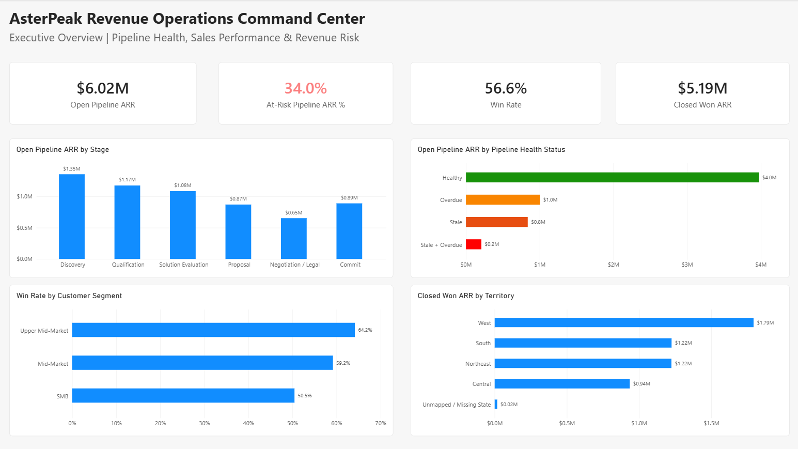
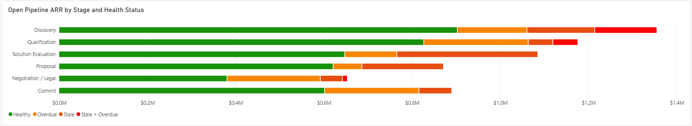
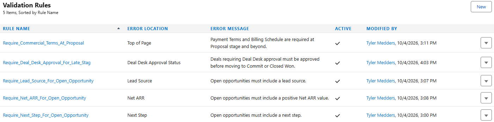
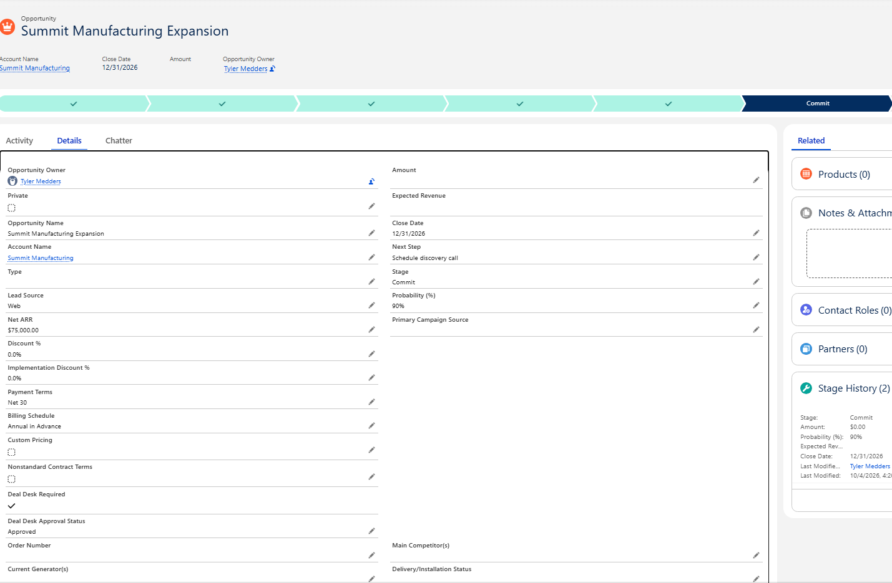
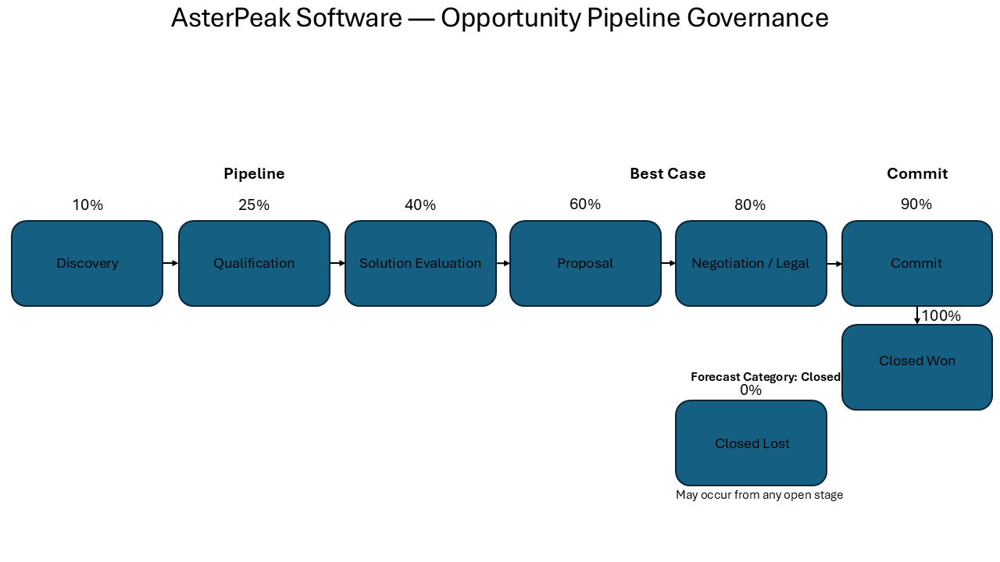

Portfolio Case Study
AsterPeak Revenue Operations Command Center
AsterPeak is a fictional B2B SaaS company I created for this independent portfolio project. The case study uses synthetic CRM data to model realistic RevOps work across analysis, reporting, Salesforce governance, lead routing, pipeline management, forecasting, Deal Desk, and process documentation.

Business Context
The business problem
AsterPeak Software is a fictional U.S.-based B2B SaaS company with about $15M to $20M in ARR and roughly 100 employees. In the model, HubSpot handles early marketing lifecycle activity and Salesforce is the primary sales system of record.
The issue was not just reporting. I found exceptions in CRM data quality, lead routing, pipeline hygiene, forecast classification, and historical commercial-approval evidence. The goal was to identify those issues and then build controls and processes around them.
Key Findings
What the analysis found
- 53 of 160 open opportunities were stale, overdue, or both, representing roughly 34% of total open pipeline ARR.
- 162 lead-routing exceptions included unassigned leads, territory mismatches, segment mismatches, and incomplete routing data.
- 38 of 885 forecast snapshots were misaligned with expected stage-based categories.
- 150 closed opportunities met modeled Deal Desk criteria, but only 61 had identifiable approval evidence.
- Deal Desk flagging logic achieved 97.6% accuracy across the modeled opportunity population.
Analytics
How I analyzed the data
I used SQL to build the analysis, Excel to audit and reconcile records, and Power BI to turn the results into executive and diagnostic reporting across pipeline health, sales performance, lead funnel and source, forecast reliability, and CRM / Deal Desk governance.


Salesforce Governance
What I built in Salesforce
The Salesforce work shows how the analysis could be turned into controls that catch problems before they move further through the sales process.
- Custom fields for Net ARR, discounting, implementation discounts, payment terms, billing schedule, custom pricing, nonstandard terms, Deal Desk requirement, and approval status.
- Formula logic to automatically identify opportunities requiring Deal Desk review.
- Validation rules requiring critical opportunity information and blocking Deal Desk-required records from Commit or Closed Won until approved.
- Operational reports and a Salesforce governance dashboard for pipeline and approval visibility.


Process Design
How I documented the workflows
I documented three workflows: Marketing-to-Sales Lead Handoff, Opportunity Pipeline Governance, and Deal Desk Approval Workflow. The supporting SOPs define owners, triggers, escalation paths, and the expected management cadence.

Resources
Project files
The repository contains the source data, SQL analysis, audit workbook, Power BI files and screenshots, Salesforce evidence, process maps, SOPs, recommendations, and final case study.